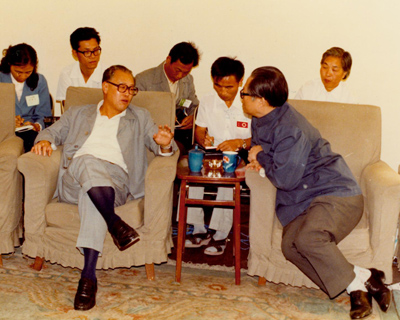
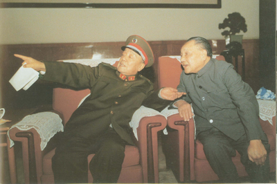
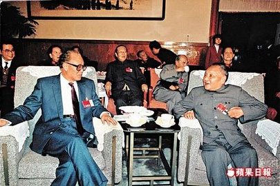
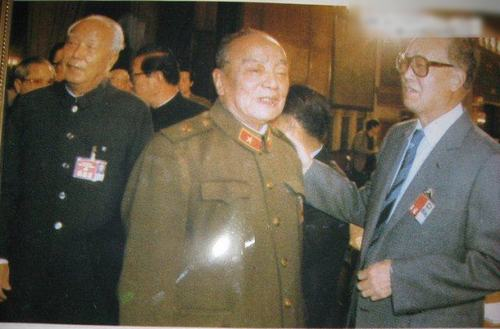

前几天在准备“Google Code 到 GitHub 的迁移”，花了不少时间。导致本文没能赶上6月4日发出。向本系列的热心读者表示抱歉 :(
套用一句评书的常用语——“花开两头，各表一枝”。在本系列的上一篇，俺介绍了“五四大游行”之后，学运转入低潮。今天这篇，俺来介绍一下：在这段期间，朝廷高层的各种活动。
首先来聊一下“五四”之后，朝廷高层的几次会议。这部分相当于流水帐，让列位看官大致了解当时朝廷高官在忙些啥。
这天上午，赵紫阳找胡启立和芮杏文谈了关于“新闻改革”的事情。俺提醒一下：“胡启立、芮杏文”两人都是铁杆改革派，算是赵紫阳这边的人。胡启立是政治局常委，芮杏文是中央书记处书记。
关于这个会议，在《改革历程——赵紫阳回忆录》中只是一笔带过（如下）：
俺又对照了陆超祺写的《六四内部日记》。陆超祺是《人民日报》副总编，他写的日记中（此书62页）有提到——5月8日胡启立给《人民日报》的“老钱”打电话，落实“新闻改革”的相关事宜。
除了陆超祺的《六四内部日记》，《关键时刻——李鹏日记》也提及此事（如下）：
根据俺看过的各种资料，在赵紫阳从北朝鲜访问归来之后，天朝的新闻界出现了前所未有的宽松局面。其“宽松”的程度，不仅远远超过“毛时代”，也远远超过“江蛤蟆、胡面瘫、习呆呆”三人主政的时期。非常可惜的是，这种宽松的局面，仅仅维持了不到半个月。
在这天开了“政治局常委会”，听取北京市关于学潮的汇报。汇报人是“李锡铭、陈希同”两人，分别代表北京市委和北京市政府。
当时的政治局常委有5人（排名分别是：赵紫阳、李鹏、乔石、胡启立、姚依林）都参会，另外，杨尚昆、薄一波等少数几个元老也列席。
李陈二人汇报完之后，常委们和元老们就各自发表意见——主要是围绕“新闻改革”和“廉政建设”。因为这两条是学生重点关注的。
赵紫阳先发言，俺摘录其中部分（如下）：
除了赵紫阳的发言提到腐败问题，杨尚昆也提了。他的发言如下：
1. 早在80年代，任人唯亲的“太子党现象”就已经很普遍了
2. 民众对这种现象非常反感
3. 这种现象会严重动摇朝廷的公信力和民意基础
说到这里，聪明的读者自然就明白——为啥俺要花很多时间和精力，去整理那份《太子党关系网络》的文档——这样一份文档，流传得越广，对朝廷的打击越大。当然啦，文档本身的素材（信息来源）也要做到高度可靠/可信，这样才有说服力。
在那天的会议上，保守派干将姚依林也发言了。他的发言回避了“反腐”和“政改”，一味强调对学生要强硬。以下是他的发言：
（那天的会议记录，《天安门文件》一书中有包含。因为参会的人比较多，俺就不把会议记录全部列出来了，以免篇幅太长）
相比2天前的“政治局常委会”，5月10日这天开的是“政治局会议”——也就是说，政治局全体成员都参加（包括平时不在北京的委员）。当时的政治局有17人，其中3人在外地（上海市委书记江泽民、天津市委书记李瑞环、四川省委书记杨汝岱）。
因为这次会议的人更多了，所以俺就更没必要把会议记录全部列出，以免篇幅太长。详细的会议记录可以参见《天安门文件》。
和2天前的会议一样，老赵继续强调“廉政建设”的重要性，姚依林继续唱反调，要求对学生强硬，不能拖。外地来的三个委员分别介绍了当地学潮的情况。老江在介绍上海的情况之后，被赵紫阳和胡启立批了一通——主要是指责老江处理《世界经济导报》的时候太过火。
据未经证实的传闻：由于在会议上挨批，老江连续好几天愁眉不展。老江这个人是典型的天朝官僚——在上级面前装孙子，在下级面前装大爷。如果你明白老江这种性格，就能理解当年他为何在香港记者面前失态，并骂出那段流传很广的英文。
说到这里，顺便贴一张照片（可能某些读者已经看过）：
 这是老赵还在当总书记时，赵江二人会面时的情形。老江为了装孙子，屁股只坐半边，两手趴在沙发扶手上。虽然照片没拍到江蛤蟆的脸，不过大伙儿可以自己想象一下他当时的表情。
刚才介绍的都是台面上的会议。如果你熟悉中共党史，或者熟悉天朝官场文化，那么你应该明白——大多数台面上的会议，通常只是走形式。真正关键的决策，通常来自于台面下（私底下）的碰面或密谈。接下来，俺来介绍一下：当时朝廷高层的三次私下会面。这三次会面很重要，对后续的事态发展有重要影响。
在介绍私下会谈之前，有必要做一下铺垫——聊聊“邓、赵、杨”三人的关系。
在“邓、赵、杨”三人中，邓小平是最关键的人物，也是俺着墨最多的。在这个系列中，俺花了整整两篇博文来介绍矮邓（第2篇《太上皇邓小平的阴暗面》、第3篇《太上皇邓小平的政治路线》）。至于赵紫阳，也在本系列的第22篇《废帝赵紫阳其人》专门介绍过了。所以今天这里，只单聊一下杨尚昆其人。
杨尚昆早在延安时期，就已经是中共北方局副书记，并协助刘少奇创建“华北敌后抗日根据地”。从1945年到1965年，【连续20年】担任“中共中央办公厅主任”（这个职务被戏称“大内总管”，其重要性可见一斑）。据俺所知，好像没有哪个中办主任的任期，能超过杨尚昆。
文革刚开始不久，杨尚昆卷入“彭罗陆杨反党集团”（彭真、罗瑞卿、陆定一、杨尚昆），被彻底打倒。文革期间挖出不计其数的“反党集团”，在这些“反党集团”中，“彭罗陆杨反党集团”在时间上名列第一。
被打倒之后，杨尚昆遭到长期关押，直到1978年才复出。复出后，他成为邓小平的铁杆亲信。先是在广东当了2年地方官（广东省委第二书记、副省长），之后不久（1982年）被邓小平提拔成中央军委副主席兼秘书长，然后在这个位置上干了10年。
由于长期担任军委副主席并兼任军委秘书长，杨尚昆在军方高层培养了一大帮亲信，坊间戏称“杨家将”。比如杨尚昆的亲弟弟杨白冰（原名杨尚正），军衔一路升到上将，职务一路升到总政治部主任，之后进入中央军委并接任他哥哥中央军委秘书长的职务。再比如：杨尚昆的亲妹夫廖汉生，开国中将，八十年代当过沈阳军区第一政委。

他俩同为四川老乡。邓小平在1956年至1967年负责中央书记处的工作。这个职务跟中办主任杨尚昆会有很多工作上的往来。有可能在那时，邓杨二人就有了很密切的私交。
80年代，邓小平成了伟光正的掌门人。虽然他是实际上的一把手，但是他又非常忌讳别人说他“贪恋权位”。所以捏，他只保留一个最关键的“中央军委主席”职务，而把党主席（后改称“总书记”）的职务留给胡耀邦和赵紫阳。
虽然是中央军委主席，但是老邓又不愿意花太多时间和精力去关注各种事务性的工作。这时候就需要一个亲信，来帮助他监管中央军委以及协调党内高层。而杨尚昆曾经当了20年的大内总管，很擅长于处理各种“事务性的工作”，也很擅长党内高层的协调。所以杨尚昆被老邓安插到中央军委当副主席，兼任军委秘书长。同时他还是政治局委员，可以参与政治局的各种会议。
为了说明两人关系密切的程度，俺举个例子：其他朝廷高官（包括总书记赵紫阳）想去见邓太上皇，都需要事先通报“邓办”。如果“邓办”说邓小平肯见，才能去。而杨尚昆可以不经通报，直接去邓家。

赵紫阳本来是总理，胡耀邦总书记下台后，经邓力挺，赵紫阳由总理升任总书记。至少在当时（1987年），两人的关系是非常密切的。
但是到了1989年上半年，邓赵二人的关系已经出现裂痕。出问题的原因，很可能是因为——对政治改革的看法不同。下面俺大致说说经过。
在赵紫阳当总理期间，他主要注意力都在经济改革方面，而政治改革是胡耀邦在负责。所以那时候，赵紫阳跟邓小平没有分歧（因为邓是力挺“经济改革”滴）。等到胡耀邦下台，赵紫阳接任总书记，“政治改革”的议题就摆在赵紫阳面前了。虽然赵紫阳在诸多方面（性格、政治手腕）跟胡耀邦截然不同，但是在“政治改革”方面，他们两人有诸多相同之处。而俺在本系列的第3篇已经介绍过“邓小平的政治路线”——他【不想】在政治制度方面进行实质性变革。于是，对“政改”要如何搞，邓赵二人自然就出现分歧，进而演化为两人关系的裂痕。（对这段历史感兴趣的同学，可以去看杨继绳写的《中国改革年代的政治斗争》，俺的网盘有电子版）
说到两人关系的裂痕，是有迹可寻滴。具体的分析请看本系列第25篇《赵紫阳的策略为何失败？》。在那篇中，俺花了比较长的篇幅，指出邓赵二人关系疏远的迹象。具体的分析很长，此处不再重复罗嗦。

最后来说说三角关系的最后一条边——赵杨二人的关系。
这俩人都是邓的亲信，关系自然不会差。从赵紫阳的角度考虑，因为杨是邓的对外联络人，很多“通气”的事情，赵需要杨的帮助。因此，赵自然要尽量跟杨搞好关系。
另一方面，当时邓的年龄很大了，随时可能挂掉（去见马克思）。如果邓在军委主席任期内死亡，那么赵紫阳作为【排名第一】的军委副主席，自然就可以接任。一旦发生这种情况，杨尚昆从“杨家将”的角度考虑，也必须跟赵保持非常密切的关系。基于此，当赵紫阳跟保守派高官发生争议，（杨尚昆如果在场）通常都是替赵紫阳说话。比如前面提到5月10日的政治局会议，杨尚昆发言的时候就说：
刚才聊了“邓赵杨”三人的关系作为铺垫，接下来聊聊他们三人私下里的三次碰面。
这是“三次碰面”的第一次，可能是在杨尚昆家中。俺直接摘录《天安门文件》关于两人的对话记录，当中会穿插俺的点评，以 小括号+斜体 的形式标注。
关于这次碰面，俺直接摘录《天安门文件》关于两人的对话记录，当中会穿插俺的点评，以 小括号+斜体 的形式标注。
关于这次碰面，主要是邓赵两人在谈，杨只是陪衬。关于谈话内容，俺直接摘录《天安门文件》中的相关记录。当中会穿插俺的点评，以 小括号+斜体 的形式标注。
此时，赵紫阳已经逐渐被逼入死角，缺乏政治上回旋的余地。为啥这么说捏？一方面，邓希望学潮【快速】平息；另一方面，学生开始发起“绝食抗议”以扩大声势。
非常不巧的是，苏联一把手戈尔巴乔夫很快（15日）就要访华。如果没有这次外事活动，赵紫阳的回旋余地可能还大一些。有了这次外事活动，就如同“化学催化剂”——学生方面希望利用戈氏访华，升级抗议的规模，扩大学运的影响；而老邓因为戈氏访华之际，学潮还未平息，让他在国际上丢脸（矮凳其实是很注重面子的，本系列开头几篇有提及他的性格）。如此一搞，让恼羞成怒的邓，下了动武的决心。
赵的官场经验还是很丰富滴（本系列的第8篇、第22篇有介绍过），他显然也意识到自己的困境。该咋办捏？在本系列后续的博文，咱们继续聊。
回到本系列的目录
套用一句评书的常用语——“花开两头，各表一枝”。在本系列的上一篇，俺介绍了“五四大游行”之后，学运转入低潮。今天这篇，俺来介绍一下：在这段期间，朝廷高层的各种活动。
★台面上的几次会议
首先来聊一下“五四”之后，朝廷高层的几次会议。这部分相当于流水帐，让列位看官大致了解当时朝廷高官在忙些啥。
◇5月6日——赵紫阳谈“新闻改革”
这天上午，赵紫阳找胡启立和芮杏文谈了关于“新闻改革”的事情。俺提醒一下：“胡启立、芮杏文”两人都是铁杆改革派，算是赵紫阳这边的人。胡启立是政治局常委，芮杏文是中央书记处书记。
关于这个会议，在《改革历程——赵紫阳回忆录》中只是一笔带过（如下）：
当时学生要求解决另一个社会关心的热点问题是新闻自由问题，我在5月6日找胡启立、芮杏文专门讨论了新闻改革的问题，提出制订新的新闻法着眼点应当是适当放宽新闻报道和言论的尺度。不过捏，在《天安门文件》中，有比较详细的会议记录，俺摘录其中一部分（粗体是俺标注滴）：
胡启立：
「这次学潮中，学生们非常强烈的一点就是要求新闻界对他们的游行等活动进行如实报导。学生们对新闻报导的不满，一开始主要是对四月十九、二十日晚学生在新华门前静坐示威的报导不满，认为新华社的报导过于片面。
接下来就是对《四二六社论》的强烈不满，认为对学生的定性是完全错的。接着就是上海《世界经济导报》被整顿一事传得纷纷扬扬。新闻界在这次学潮中承受的压力很大。学生们提出新闻要讲真话的强烈呼吁，在新闻记者中引起很大反响。一些记者对报社领导扣压有关学潮的报导很有意见，连新华社、人民日报社都出现这种情况。所以，在四月二十七日，我们开了一个会，把几大家新闻单位的负责人都召集来了。
会上，他们强烈要求对这次学潮报导的分寸，中央要有一个明确意见。所以我在会上说了一条原则，就是在报导学潮这个问题上，报社主编有权决定可以报导什么，或不报导什么。不一定事事都要请示。」
赵紫阳：
「我看这几天的新闻，放开了一点，对游行作了报导。没有什么不好的反映嘛。新闻公开程度增加一点，风险不大。」
芮杳文：
「我也跟启立同志汇报过这个问题。新闻要讲真话，要使之真正成为党的喉舌、人民的喉舌，要让老百姓相信。现在，我们自己的新闻记者就不相信自己。四日有二百多名新闻记者上街游行，打出的主要标语就是：新闻要说真话，新闻属于人民。其中有一条激烈的标语上写着：不要逼我造谣。这除了说明这次学潮已开始波及新闻界，需要引起中央高度重视外。我们的新闻体制的确需要尽快改草，不能几十年一贯制。」
赵紫阳：
「这几天听了不少反映，看了不少报告，我觉得新闻改革既是大势所趋，也是人心所向。面对国内人心所向，面对国际进步潮流，我们只能因势利导。要向首都新闻单位的主要负责同志讲清楚，新闻报导一定要说真话，千万不能制造假新闻，不能隐瞒事实。新闻报导要真正做到：客观、全面、真实、及时，这也是我国民主政治建设的一部份。」
胡启立：
「据新华社反映，这几天首都新闻界正在发起一场新闻记者签名活动，要求与我们对话。」
赵紫阳：
「我们欢迎各种形式和层次的对话。与新闻记者进行对话，倾听他们的呼声，了解他们的想法，有助于我们的新闻改革。当然，我们对一些过激的言论要提出忠告和批评。今后，在处理一些敏感的新闻事件时，一定要慎重、慎重、再慎重。千万不能匆忙、草率地简单下结论。《世界经济导报》事件搞得我们很被动，原因就在这里，要引以为鉴。」
俺又对照了陆超祺写的《六四内部日记》。陆超祺是《人民日报》副总编，他写的日记中（此书62页）有提到——5月8日胡启立给《人民日报》的“老钱”打电话，落实“新闻改革”的相关事宜。
除了陆超祺的《六四内部日记》，《关键时刻——李鹏日记》也提及此事（如下）：
今天（编程随想注：5月7日）中共中央宣传口开了会，有新华社、人民日报、中央电视台、中央人民广播电台、中宣部、广电部等单位的负责人参加。胡启立、芮杏文、阎明复到会，由胡启立传达赵紫阳的指示。《六四内部日记》和《李鹏日记》，从另一个侧面反应出改革派确实想改革当时的新闻审查制度。上述这4本书相互印证，也说明《天安门文件》不像是凭空编造的。因为《天安门文件》出版于2001年，时间上远远早于另外几本书。如果是空口瞎编，很难做到相互印证。
......
这两天新闻报道本来就向动乱分子一边倒，赵紫阳还嫌不足，还要新闻界把动乱之火再次煽动起来。
根据俺看过的各种资料，在赵紫阳从北朝鲜访问归来之后，天朝的新闻界出现了前所未有的宽松局面。其“宽松”的程度，不仅远远超过“毛时代”，也远远超过“江蛤蟆、胡面瘫、习呆呆”三人主政的时期。非常可惜的是，这种宽松的局面，仅仅维持了不到半个月。
◇5月8日——赵紫阳主持“政治局常委会”
在这天开了“政治局常委会”，听取北京市关于学潮的汇报。汇报人是“李锡铭、陈希同”两人，分别代表北京市委和北京市政府。
当时的政治局常委有5人（排名分别是：赵紫阳、李鹏、乔石、胡启立、姚依林）都参会，另外，杨尚昆、薄一波等少数几个元老也列席。
李陈二人汇报完之后，常委们和元老们就各自发表意见——主要是围绕“新闻改革”和“廉政建设”。因为这两条是学生重点关注的。
赵紫阳先发言，俺摘录其中部分（如下）：
这次学潮的发生，实际上是近年来国内外多种因素积累和演化的结果，它的社会背景十分复杂，主要有以下几点：老赵提的这几条关于“廉政建设”的想法，随着几天之后老赵黯然下台，全都不了了之。
一，由于近年社会中分配不公，导致两极分化现象，使少数人暴富，这中间包括一些政府官员和干部子弟。这一现实，使不少人对现行制度的社会主义性质产生怀疑。
二，由于我们工作中的一些失误，使人民群众对党的方针政策的信任程度大为降低。
三，通货膨胀直接影响了广大人民群众的生活水平，引起人民群众广泛的不满。
所以，这次学潮在人民群众中产生了很大影响。为了及时有效地平息这次学潮，解决人民群众普遍关心的问题。我觉得，我们应该在廉政和民主建设方面办几件实事，使群众看到我们正在做出努力。
......
我的基本想法是，把廉政作为政治体制改革的一件大事来抓，把廉政同民主、法制、公开性、透明度、群众监督、群众参与等密切结合起来。
当前，在廉政建设方面，我的初步想法是：
国务院尽快向全国人大常委会报告清理整顿公司的情况；（编程随想注：此处提及的“公司”指“官倒公司”）
公布副部长以上高级干部的收入和身世；（编程随想注：这条相当于部分引入“官员财产公开”）
取消八十岁（或七十五岁）以下中央政治局委员的“特供”；（编程随想注：为啥特地强调在某个年龄之下？因为连赵紫阳也不敢得罪“八大元老”）
由全国人大常委会组织专门委员会，对涉及高干及其家属的举报案件进行独立调查；
在广泛讨论的基础上，制定新闻法和游行示威法等等。
我建议把今天会议的讨论内容放到政治局的会议上再进行讨论，以便提出更加全面有力的方案。
除了赵紫阳的发言提到腐败问题，杨尚昆也提了。他的发言如下：
这次学潮，流传着一张在社会上传播很广的所谓的“亲官图”或叫作“革命关系图”。从杨尚昆这段话可以看出如下几点：
图中罗列了高干子弟担任省军级以上高级官职的亲属谱系。这张图在社会上传播极广，已达到臭名昭著、大失民心的地步。小平同志也听说了，非常生气。我看了此图，里面所列有真有假。这是对党和政府威信的极大损害。我认为，有必要在适当场合对此加以澄清。
我认为，高干子女中有德有才的，完全可以与平民子弟同等资格担任高级干部。问题是必须保证。同等资格。这一点，很多老百姓对此不相信。在政治改革中，应当建立制度化选拔和提升干部的方式，使无论高干子弟还是平民子女，其中的优秀分子都能有平等的机会，根据德才标准，担任高级职务。目前由于缺乏这一制度，事实上使许多担任高级职务的高干子弟在人民群众中受到广泛嘲骂。
他们即使自己工作很有成就，人民群众也会认为他只是沾老子的光当官而已。所以，我们同样要尽快建立这样一种公开选拔任用干部的制度。
1. 早在80年代，任人唯亲的“太子党现象”就已经很普遍了
2. 民众对这种现象非常反感
3. 这种现象会严重动摇朝廷的公信力和民意基础
说到这里，聪明的读者自然就明白——为啥俺要花很多时间和精力，去整理那份《太子党关系网络》的文档——这样一份文档，流传得越广，对朝廷的打击越大。当然啦，文档本身的素材（信息来源）也要做到高度可靠/可信，这样才有说服力。
在那天的会议上，保守派干将姚依林也发言了。他的发言回避了“反腐”和“政改”，一味强调对学生要强硬。以下是他的发言：
我没有别的意见。我想补充一点，这次学潮还没有完。这几天虽然太平一点，但学生们又在酝酿下一步的动作，又有一些别有用心者在为学生出主意。我们是执政党，好的意见我们接受。不好的我们要理直气壮地反驳。邓太上皇虽然没有参加这个会，但是邓太上皇好像知道会议的内容（俺猜会议纪要抄送给老邓过目了）。因为在11日下午，邓与杨尚昆私下碰头时，邓还特地表扬了姚依林。邓的原话是：
这次学潮已经牵扯了我们太多的精力。学生现在在采取“拖”的策略，我们不能“拖”，我们“拖”不起。该强硬的就一定要强硬起来，决不能因为学潮而打乱我们正常的工作部署。
我看常委中只有姚依林的观点最鲜明，态度最坚决，并且一以贯之。（关于邓杨二人私下的会谈，本文后面会聊到）
（那天的会议记录，《天安门文件》一书中有包含。因为参会的人比较多，俺就不把会议记录全部列出来了，以免篇幅太长）
◇5月10日——赵紫阳主持“政治局会议”
相比2天前的“政治局常委会”，5月10日这天开的是“政治局会议”——也就是说，政治局全体成员都参加（包括平时不在北京的委员）。当时的政治局有17人，其中3人在外地（上海市委书记江泽民、天津市委书记李瑞环、四川省委书记杨汝岱）。
因为这次会议的人更多了，所以俺就更没必要把会议记录全部列出，以免篇幅太长。详细的会议记录可以参见《天安门文件》。
和2天前的会议一样，老赵继续强调“廉政建设”的重要性，姚依林继续唱反调，要求对学生强硬，不能拖。外地来的三个委员分别介绍了当地学潮的情况。老江在介绍上海的情况之后，被赵紫阳和胡启立批了一通——主要是指责老江处理《世界经济导报》的时候太过火。
据未经证实的传闻：由于在会议上挨批，老江连续好几天愁眉不展。老江这个人是典型的天朝官僚——在上级面前装孙子，在下级面前装大爷。如果你明白老江这种性格，就能理解当年他为何在香港记者面前失态，并骂出那段流传很广的英文。
说到这里，顺便贴一张照片（可能某些读者已经看过）：
★“邓、赵、杨”三角关系
刚才介绍的都是台面上的会议。如果你熟悉中共党史，或者熟悉天朝官场文化，那么你应该明白——大多数台面上的会议，通常只是走形式。真正关键的决策，通常来自于台面下（私底下）的碰面或密谈。接下来，俺来介绍一下：当时朝廷高层的三次私下会面。这三次会面很重要，对后续的事态发展有重要影响。
在介绍私下会谈之前，有必要做一下铺垫——聊聊“邓、赵、杨”三人的关系。
在“邓、赵、杨”三人中，邓小平是最关键的人物，也是俺着墨最多的。在这个系列中，俺花了整整两篇博文来介绍矮邓（第2篇《太上皇邓小平的阴暗面》、第3篇《太上皇邓小平的政治路线》）。至于赵紫阳，也在本系列的第22篇《废帝赵紫阳其人》专门介绍过了。所以今天这里，只单聊一下杨尚昆其人。
◇杨尚昆其人
杨尚昆早在延安时期，就已经是中共北方局副书记，并协助刘少奇创建“华北敌后抗日根据地”。从1945年到1965年，【连续20年】担任“中共中央办公厅主任”（这个职务被戏称“大内总管”，其重要性可见一斑）。据俺所知，好像没有哪个中办主任的任期，能超过杨尚昆。
文革刚开始不久，杨尚昆卷入“彭罗陆杨反党集团”（彭真、罗瑞卿、陆定一、杨尚昆），被彻底打倒。文革期间挖出不计其数的“反党集团”，在这些“反党集团”中，“彭罗陆杨反党集团”在时间上名列第一。
被打倒之后，杨尚昆遭到长期关押，直到1978年才复出。复出后，他成为邓小平的铁杆亲信。先是在广东当了2年地方官（广东省委第二书记、副省长），之后不久（1982年）被邓小平提拔成中央军委副主席兼秘书长，然后在这个位置上干了10年。
由于长期担任军委副主席并兼任军委秘书长，杨尚昆在军方高层培养了一大帮亲信，坊间戏称“杨家将”。比如杨尚昆的亲弟弟杨白冰（原名杨尚正），军衔一路升到上将，职务一路升到总政治部主任，之后进入中央军委并接任他哥哥中央军委秘书长的职务。再比如：杨尚昆的亲妹夫廖汉生，开国中将，八十年代当过沈阳军区第一政委。
◇邓小平与杨尚昆
他俩同为四川老乡。邓小平在1956年至1967年负责中央书记处的工作。这个职务跟中办主任杨尚昆会有很多工作上的往来。有可能在那时，邓杨二人就有了很密切的私交。
80年代，邓小平成了伟光正的掌门人。虽然他是实际上的一把手，但是他又非常忌讳别人说他“贪恋权位”。所以捏，他只保留一个最关键的“中央军委主席”职务，而把党主席（后改称“总书记”）的职务留给胡耀邦和赵紫阳。
虽然是中央军委主席，但是老邓又不愿意花太多时间和精力去关注各种事务性的工作。这时候就需要一个亲信，来帮助他监管中央军委以及协调党内高层。而杨尚昆曾经当了20年的大内总管，很擅长于处理各种“事务性的工作”，也很擅长党内高层的协调。所以杨尚昆被老邓安插到中央军委当副主席，兼任军委秘书长。同时他还是政治局委员，可以参与政治局的各种会议。
为了说明两人关系密切的程度，俺举个例子：其他朝廷高官（包括总书记赵紫阳）想去见邓太上皇，都需要事先通报“邓办”。如果“邓办”说邓小平肯见，才能去。而杨尚昆可以不经通报，直接去邓家。
◇邓小平与赵紫阳
赵紫阳本来是总理，胡耀邦总书记下台后，经邓力挺，赵紫阳由总理升任总书记。至少在当时（1987年），两人的关系是非常密切的。
但是到了1989年上半年，邓赵二人的关系已经出现裂痕。出问题的原因，很可能是因为——对政治改革的看法不同。下面俺大致说说经过。
在赵紫阳当总理期间，他主要注意力都在经济改革方面，而政治改革是胡耀邦在负责。所以那时候，赵紫阳跟邓小平没有分歧（因为邓是力挺“经济改革”滴）。等到胡耀邦下台，赵紫阳接任总书记，“政治改革”的议题就摆在赵紫阳面前了。虽然赵紫阳在诸多方面（性格、政治手腕）跟胡耀邦截然不同，但是在“政治改革”方面，他们两人有诸多相同之处。而俺在本系列的第3篇已经介绍过“邓小平的政治路线”——他【不想】在政治制度方面进行实质性变革。于是，对“政改”要如何搞，邓赵二人自然就出现分歧，进而演化为两人关系的裂痕。（对这段历史感兴趣的同学，可以去看杨继绳写的《中国改革年代的政治斗争》，俺的网盘有电子版）
说到两人关系的裂痕，是有迹可寻滴。具体的分析请看本系列第25篇《赵紫阳的策略为何失败？》。在那篇中，俺花了比较长的篇幅，指出邓赵二人关系疏远的迹象。具体的分析很长，此处不再重复罗嗦。
◇赵紫阳与杨尚昆
最后来说说三角关系的最后一条边——赵杨二人的关系。
这俩人都是邓的亲信，关系自然不会差。从赵紫阳的角度考虑，因为杨是邓的对外联络人，很多“通气”的事情，赵需要杨的帮助。因此，赵自然要尽量跟杨搞好关系。
另一方面，当时邓的年龄很大了，随时可能挂掉（去见马克思）。如果邓在军委主席任期内死亡，那么赵紫阳作为【排名第一】的军委副主席，自然就可以接任。一旦发生这种情况，杨尚昆从“杨家将”的角度考虑，也必须跟赵保持非常密切的关系。基于此，当赵紫阳跟保守派高官发生争议，（杨尚昆如果在场）通常都是替赵紫阳说话。比如前面提到5月10日的政治局会议，杨尚昆发言的时候就说：
紫阳讲的在民主和法制的轨道解决问题，这个办法有利于平息学潮。在目前情况下是可行的。
★台面下的几次碰头
刚才聊了“邓赵杨”三人的关系作为铺垫，接下来聊聊他们三人私下里的三次碰面。
◇5月6日——赵杨二人碰面
这是“三次碰面”的第一次，可能是在杨尚昆家中。俺直接摘录《天安门文件》关于两人的对话记录，当中会穿插俺的点评，以 小括号+斜体 的形式标注。
赵紫阳：
「从朝鲜回来后，我除了看材料了解一些情况，还分别找乔石、启立、纪云和许家屯同志谈过话，前天还与李鹏同志交换过意见。主要是想全面了解对这次学生运动的看法。我总觉得，这次学潮的主流是好的，是拥护党和支持改革的。
很多青年学生期望改革的步子能更快一点，国家的民主化程度能更高一点。他们的主观愿望是好的，但言行过激，有些地方表现得不冷静，缺少理智。所以，我在亚行理事会上的讲话特别强调了要冷静、理智、克制、秩序，我相信能在民主、法制的轨道上解决这次学潮。」
杨尚昆：
「你在亚行理事会的讲话，党内反应很好。乔石、万里、荣老板、许家屯都说讲得不错，学生、社会的反应也很好，北京高校现在已经大部份复课了。这就是效果。你说得对呵，这次学潮的确跟以往不同，支持学生的人很广泛，包括广大的党政机关干部。学生所提的口号也相当策略，拥护共产党，拥护改革开放。这一方面表达了大多数人的意见，另一方面也反映出的确有人在帮学生出主意，这里不排除那些自由化分子，也不排除某些外国势力以及港台一些反共势力的介入，但运动的主流是好的。」
赵紫阳：
「我觉得，这次学潮如果处理得好，可能有利于我们进一步推进改革。」
杨尚昆：
「所以，对这次学潮，还是应该疏导、分化，不能镇压，应该争取学生的绝大多数，把极少数反共、搞破坏的人孤立起来。
学生们要求廉政，反对贪污，反对“官倒”，反对特权……这些都是我们党提出的，现在学生和群众支持是好事嘛。我们要通过对话，对于群众提的要求，接受合理的部份。所以，我建议采取一些具体措施，来制止、杜绝这些弊端。」
赵紫阳：
「我也正在考虑这个问题。如反腐败，特别是高干子女问题，首先从我做起。我准备向中央写一封信，建议先调查我的子女，如有腐败问题，就接受国法处理；如有涉及我本人，一样。
再如“特供”问题，从常委做起，先考虑取消给常委的“特供”。小平、先念、陈云等老同志，可以继续保留。常委外出的专机、专列和保卫制度要改革，几位老同志可以保留，新的常委要考虑轻车简从。
最根本的是，建议全国人大筹委会参与讨论、制定反贪污、反官倒、反特权的具体法律。」
杨尚昆：
「许家屯己经把你的话捎给我了。」
赵紫阳：
「我今天就是想向您谈一下自己的这个想法。我觉得，四二六社论称这次学潮为“动乱”，把矛盾激化。提法上欠斟酌。社论发表后，我听说北京市的广大干部和市民都很震惊，多数人不同意社论的看法，骂小平同志；也有一种说法，说有人把小平同志抬出来了。
我们要维护小平同志的形像，不能把他的形像给损坏了。」
杨尚昆：
「我们的看法是一致的。一定要维护小平同志的威信。」
赵紫阳：
「我觉得，现在主要是二个问题：一是争取小平同志同意改变对学生运动的定性，二是征求常委意见，改变决议。您认为怎样？您和小平同志是老战友，您去向小平同志反映，效果一定更好。常委这边的工作我来做。」
（编程随想注：刚才俺已经铺垫过背景知识了。赵希望利用杨与邓的私交，让杨帮忙说服邓改变“426社论”关于“动乱”的定性。）
杨尚昆：
「我揣摸，常委这边的工作也不一定好做。」
赵紫阳：
「乔石、胡启立应该没有问题，姚依林、李鹏可能会听不进去。」
杨尚昆：
「我去同小平讲，他的脾气，你是知道的，他可能听进去，也可能听不进。我试试吧。」
◇5月11日——邓杨二人碰面
关于这次碰面，俺直接摘录《天安门文件》关于两人的对话记录，当中会穿插俺的点评，以 小括号+斜体 的形式标注。
杨尚昆：
「这次学潮与两年前的那次很不相同，支持学生的人很广泛，学校教师、新闻记者包括一些机关干部都有。学生所提的口号也有很多方回是老百姓想说而没有说出来的。所以，这次学潮有市场。现在，全国一些大学开始出现一些所谓的学生自治组织，北京还成立了一个叫高自联的组织，公开来策划这次学潮。到目前为止，可以说，这次学潮，一方面表达了大多数人的意见，另一方面，那些资产阶级自由化的极端分子也正在积极利用这次学潮，还有西方反华势力以及港台一些反革命组织的介入。」
邓小平：
「我们从来没有遇到过这种情况，一小撮坏人混杂在那么多青年学生和围观的群众中间，提出所谓反腐败的口号来激动人心，使我们在采取策略上犹豫不决。我看，现在是学生在逼我们。」
杨尚昆：
「这次学潮之所以闹大，还持续不散，原因就是那些别有用心的人利用了人民渴望反腐败的心理。」
邓小平：
「人民要求反腐败，我们当然接受。现在这些别有用心者提出反腐败，我们也要当好话来接受。当然，这个口号只是他们的陪衬，他们的核心是要打倒共产党，推翻社会主义制度。」
（编程随想注：从矮凳这段话来看，他对学运的定性，已经上升到“敌我矛盾”，而不仅仅是“人民内部矛盾”。这种情况下，别人很难让矮凳改变“动乱”的定性。）
杨尚昆：
「对于这次学潮的处理，常委已经开过多次会议。赵紫阳提出要在民主和法制的轨道下解决学潮问题，政治局已建议六月份的人大常委会议专题研究这次学生提出的，人民群众关心的几个热点问题。」
（编程随想注：杨尚昆是官场老手——他发现老邓已经把学潮上升到“敌我矛盾”，也就不再企图说服老邓改变“426社论”的定性。所以之后的谈话，杨主要是陈述事实，再没有提“改变定性”的话题。）
邓小平：
「你怎么看待赵紫阳的亚行讲话？」
杨尚昆：
「紫阳的亚行讲话，调子比较温和，但与四月二十六日人民日报社论的基调不一致。紫阳讲话后，各地情况反映较好，北京罢课的一些学生也开始复课了，但也有一些省市对紫阳讲话提出了一些疑问。如北京和上海认为紫阳讲话中没有明确提“动乱”，只从正面讲“中国不会出现大的动乱”，与四二六社论定性的调子不一样，四二六社论明确肯定有黑手在幕后策划，而紫阳讲话中只说“当然难免”，也让人不好理解。王震同志对我说，“赵紫阳本事真大，他的一篇讲话就可以把学潮解决了？”我认为紫阳讲话对缓解学潮有一定好处，但学潮并没有到此为止，只是间歇。」
（编程随想注：杨的这段话，还算中立，没有偏向赵紫阳。）
邓小平：
「读紫阳亚行讲话后，先念同志就打电话对我说，现在中央有两种声音。陈云同志也捎话来，要我看看赵紫阳的这篇讲话。当然也有一些人认为讲话有说服力，能打动人。这几天我一直在考虑这个问题，到底哪一种处理办法更有利于问题的解决？」
杨尚昆：
「前几天，赵紫阳就跟我谈了他的一些想法，要我把他的想法向您报告一下。赵紫阳认为，四二六社论在对学潮的提法上欠斟酌，定性高了。他还说：“现在社会上有一种说法，说有人把小平同志抬出来了。我们要维护小平同志的形像，不能把他的形像给损坏了”。赵紫阳主张，对这次学潮，要疏导、分化，争取学生中的绝大多数，把极少数反共、搞破坏的人孤立起来。赵紫阳希望在适当时机对四二六社论的定性作一些改变。」
邓小平：
「常委中别人的意见呢？」
杨尚昆：
「他的这些看法只是私下里对我说，还没有在常委和政治局会议上正式提出来过。依赵紫阳的估计，乔石、胡启立可能会同意，李鹏、姚依林大概不会同意。」
邓小平：
「我看常委中只有姚依林的观点最鲜明，态度最坚决，并且一以贯之。在重大政治问题面前政治局常委一定要果断，要敢于坚持原则。当然，我们要尽力采取平和的手段解决这次学潮。」
（编程随想注：邓说这句话，表面上是夸奖姚，实际上是在隐晦表达他对赵紫阳处理学潮（怀柔政策）的不满）
杨尚昆：
「戈尔巴乔夫过几天就来了。为了确保这次会晤的圆满，中央外事工作领导小组提出了很详尽的接待方案，常委们都已传阅。特别是戈尔巴乔夫与您的最高级别会晤，我已特别叮嘱吴学谦一定要外交部精心安排，不能有疏忽。」
邓小平：
「戈尔巴乔夫在北京期间，天安门一定要有秩序要注意我们的国际影响。天安门如果乱糟糟，会成什么体统？」
杨尚昆：
「天安门是我们的脸面，我们尤其不能在戈尔巴乔夫来华这几天把天安门搞得乌烟瘴气。我会再向他们，赵紫阳、李鹏强调的。」
邓小平：
「你怎么看京、津、沪三地对这次学潮的处理？」
杨尚昆：
「处理这次学潮，态度最坚决的是北京，李锡铭、陈希同几乎整天把两眼都盯在学潮上，生怕北京出现大的乱子，担当不起。陈希同就感叹说：“现在才真正体会到首都市长的难当。”我看最近他们是高度的神经紧张，也难怪他们对有些问题的看法过于严重。」
邓小平：
「要做到处乱不惊并不是容易的。」
杨尚昆：
「天津的局面控制得最好。李瑞环的态度很明确，你要对话可以，但你得遵守法律；你要游行不阻止，但你不能破坏社会秩序。李瑞环强调一点，有什么问题解决什么问题，实事求是。所以，天津总的社会秩序较好。我认为李瑞环蛮有思想。」
邓小平：
「李瑞环他懂哲学，能辩证地看问题。」
杨尚昆：
「上海的旗帜最鲜明。江泽民处理《世界经济导报》很乾脆，我看了上海关于处理《世界经济导报》的报告，市委没有分歧意见。但这个事件的确在国内外，特别是新闻界引起强烈反响，上海的压力不轻。我个人认为，上海在这件事情处理上可以更策略一些。」
邓小平：
「江泽民整顿《世界经济导报》后，陈云同志对我说：“处理学潮就应该象江泽民一样有决断”。先念说：“江泽民既坚持四项原则，又坚持改革开放，政治敏锐，党性强，有大局观”。他完全支持江泽民的做法。」
杨尚昆：
「江泽民在处理学潮上有一套。记得上次学潮（编程随想注：指的是“八六学潮”），江泽民在上海交通大学与学生对话并演讲，还用英文背诵马克思著作。当时，先念就指示中直机关党委，组织中央各单位收看江泽民与学生对话的录像。我印象很深。」
邓小平：
「部队思想状况怎么样？」
（编程随想注：问及军队，俺猜测邓有可能开始考虑动用军队戒严）
杨尚昆：
「学潮发生以来，总政治部已经连续发出四个通知，要求各大军区认真做好官兵的思想政治工作，决不介入地方政府处理学潮的事务。对于涉及严重影响地方社会安定的打砸抢事件，地方政府需要军队出面维持秩序的，必须报经中央军委批准。现在，军队的政治学习抓得很紧，一些军区还开展了官兵对话活动，针对性很强，有效果。七大军区和三总部的领导班子成员精神面貌很好，没有不团结现象。」
最后邓小平说：
「赵紫阳、你、我，我们三人认真谈一谈。」
◇5月13日——邓赵杨三人碰面
关于这次碰面，主要是邓赵两人在谈，杨只是陪衬。关于谈话内容，俺直接摘录《天安门文件》中的相关记录。当中会穿插俺的点评，以 小括号+斜体 的形式标注。
赵紫阳：通过13日的三人碰面，俺个人认为，邓已经表达出对赵处理学潮的不满。
「小平同志，我先向您汇报一下学潮和动乱以来我的一些思想。
四月中旬以来，学潮愈闹愈大，我和大家想的都是使事态尽快平息下来。但是，我也看到这次学潮有两个很值得注意的特点。一是学生提出要拥护宪法推进民主，反对腐败等口号。这些要求跟党和政府的主张基本是一致的，我们不能拒绝。二是参加游行和支持他们的人非常之多，各界人士都有。在这种情况下，我的一个想法，就是要想平息事态，必须首先着眼于大多数，把多数人的主流肯定下来。」
邓小平：
「事情一爆发出来，就很明显，是极少数人挑动了大多数人。把绝大多数人的情绪都激发起来了。」
赵紫阳：
「所以，我主张把广大青年学生和社会上很多同情者的行为与极少数人的企图利用学潮浑水摸鱼、制造事端，攻击党和社会主义的行为严格区别开来，着重采取疏导的方针，开展多层次、多渠道和各种形式的对话，互相沟通、增进理解。避免激化矛盾，尽快平息事态。」
邓小平：
「对话，好嘛。关键是要解决问题。不要让人牵着鼻子走。这次学潮已经拖得太久了，将近一个月了。老同志们心都焦急着呢。陈云、彭真、先念、王震还有邓大姐，包括我，心里都急着呢。要有决断力。我不止一次说过，我们要力争有个稳定的环境，把自己发展起来。乱糟糟的局面，怎么发展？」
杨尚昆：
「戈尔巴乔夫后天就来了。听说学生今天要宣布绝食，这是有意想把事情闹大，造成重大国际影响。」
邓小平：
「天安门是中华人民共和国的象徵。戈尔巴乔夫在北京期间，天安门一定要有秩序，要注意我们的国际影响。天安门如果乱糟糟，会成什么体统？」
杨尚昆：
「这次学潮尚未完全平息，又听说要搞绝食。我很担心这次重大的国事活动受到干扰。国家之间领导人的互访是一项重要的国事活动。任何一个国家都十分重视。这次戈尔巴乔夫来访的每项日程都事先经双方协商做好安排。为确保访问按照计划顺利进行，要求学生和北京市民加以配合，这是稍有爱国心的人都能够接受的。不知这次欢迎仪式能否顺利在人民大会堂东门外广场举行。」
赵紫阳：
「在人民大会堂东门外欢迎戈尔巴乔夫是最基本的礼仪，事关国家荣誉，我相信广大青年学生是识大体、顾大局的。不会在欢迎戈尔巴乔夫仪式上节外生枝，相信这个大道理，这帮青年学生应该是懂得的。北京市和教委已经向各大院校学生讲了这个道理。」
邓小平说：
「学生情绪一旦偏激，可顾不了这么多。」
杨尚昆：
「我们还是按照原计划行事。」
赵紫阳：
「对于戈尔巴乔夫访问一事，下午我透过新闻界再强调一下。」
邓小平：
「我说过，这次事情的发生不简单。对方不只是一些青年学生，还有一批造反派和大量的社会渣滓，更有极少数竭力反对“反资产阶级自由化”的人。这些人是要颠覆我们的国家、我们的党。一小撮人混杂在那么多青年学生和群众中间。是有很大工作难度。要看到这个问题的复杂性，不是单纯的学生与政府之间的关系。」
（编程随想注：邓再次说明了学潮是“敌我矛盾”）
赵紫阳：
「政治局的一致意见是，当前要疏导、分化，积极争取学生和知识分子中的绝大多数，把极少数反共、搞破坏的人孤立起来。用民主和法制的办法解决这次学潮。为了把工作做在前头，政治局成员已分头与社会各界群众展开对话。今天上午，李鹏去首钢，下午我与首都工人代表座谈，胡启立他们这几天正与新闻界进行对话，还有...」
邓小平打断：
「现在社会各界心态怎样？」
赵紫阳：
「这次学潮波及面虽广，但只在全国一些有高校的城市。农村不受影响，农民是稳定的。城市工人是稳定的，他们对一些社会现象不满，发发牢骚，同情这次学潮，但照常上班，没有罢工、游行和串联的事情发生。」
杨尚昆插话：
「部队官兵的思想是统一的，与党中央、中央军委保持高度一致。这次学潮对部队官兵的
思想不会有大的影响。」
邓小平：
「这次事件爆发出来，很值得我们思索，促使我们冷静地回顾一下过去。
我对外国人讲，十年最大的失误是教育，这里我主要是讲思想政治教育，不单纯是对学校、青年学生，是泛指对人民的教育。这种教育很少，是我们工作中很大的失误。这些天我总在想，四个坚持和改革开放是相辅相成的，本身没有错。如果说有错的话，就是我们坚持四项基本原则还不够一贯，没有把它作为我们的基本思想来教育人民，教育学生，教育全体党员和干部。我们必须坚持两手抓，不能忽视政治领域的工作。在我国，坚持共产党领导，不搞西方多党制，这条基本原则丝毫不能动摇。同时，党也必须解决民主的问题，解决党和国家机关滋生的腐败现象的问题。」
（编程随想注：俺在博客上多次提到，老邓的政治底线就是“四项基本原则”）
赵紫阳：
「党必须适应新时代和新情况，在做好思想政治工作的基础上用民主和法制的手段解决问题。
您一直强调要加强政治生活的透明度，充分发挥人大的监督作用，加强与完善共产党领导的多党合作制和政治协商制度，加强人民群众对党和政府的监督等等。这是非常重要的，在当前情况下显得更加重要。实行民主，意见纷纭，表面上是有些“乱”。但是，有了在民主和法制范围内的正常的小“麻烦”，就可以避免大乱。国家才能长治久安。」
（编程随想注：从这里可以看出，对“民主”和“政改”，赵跟邓的观点有差异。）
杨尚昆：
「要把正当的民主要求，行使正当的民主权利与搞资产阶级自由化区划开来。我们决不允许打着民主的旗号搞资产阶级自由化；同时，我们在反对资产阶级自由化的时候也不妨碍发扬民主。」
赵紫阳：
「高举民主和法制的旗帜深得民心，对广大人民群众有很强的吸引力、凝聚力。记得小平同志在一九八四年就曾经说过，党的领导作用的重要方面要体现在积极领导人民进行民主和法制建设上，使我们的社会主义国家成为真正的法制国家。我觉得，我们要利用当前这一时机，在党的领导下，有计划、有步骤、有秩序地发展一种坚持四项基本原则的、适合我国国情的社会主义民主制度。」
杨尚昆：
「要下大力气坚决克服、消除腐败现象。现在老百姓一提起腐败，个个咬牙切齿。恨不得天天有腐败分子被揭露。」
赵紫阳：
「消除腐败现象的确已成为当今的头等大事，老百姓的眼睛都盯着我们，看我们是不是动真格的。政治局正在研究，把廉政作为政治体制改革的一件大事来抓，把廉政同民主、法制、公开性、透明度、群众监督、群众与等密切结合起来，采取一些实际措施和步骤，扎扎实实地加以解决。在反腐倡廉的问题上，首先从政治局做起，我已建议政治局先从调查我的子女开始，如有腐败问题，就接受国法处理。万里还提议在全国人大常委会成立专门的廉政委员会。」
邓小平：
「惩治腐败，要认真做几件大事，至少抓一、二十件大案，透明度要高。要抓住这个时机，把腐败问题好好解决一下。最近我想，这个问题为什么一直搞不通，大概因为我们党的高级干部或他的家庭陷进去的比较多。讲了好几年，为什么成效不大，原因可能就在这里。处理这个问题不能迟。
这次事件，没有反对改革开放的口号，比较集中的是反对腐败。当然，这个口号是他们的一个陪衬，其目的是用反腐败来激动人心。但对我们来说，要整好我们的党，实现我们的战略目标，不惩治腐败，特别是党内的，确实有失败的危险。
在重大政治问题面前，政治局常委一定要果断，要坚持原则。当然，对这次学潮，我们要尽力采取平和的手段解决。」
（编程随想注：在最后，矮凳再次强调了“果断”，其实就是在暗示赵处理学潮太过犹豫，不够强硬。）
此时，赵紫阳已经逐渐被逼入死角，缺乏政治上回旋的余地。为啥这么说捏？一方面，邓希望学潮【快速】平息；另一方面，学生开始发起“绝食抗议”以扩大声势。
非常不巧的是，苏联一把手戈尔巴乔夫很快（15日）就要访华。如果没有这次外事活动，赵紫阳的回旋余地可能还大一些。有了这次外事活动，就如同“化学催化剂”——学生方面希望利用戈氏访华，升级抗议的规模，扩大学运的影响；而老邓因为戈氏访华之际，学潮还未平息，让他在国际上丢脸（矮凳其实是很注重面子的，本系列开头几篇有提及他的性格）。如此一搞，让恼羞成怒的邓，下了动武的决心。
赵的官场经验还是很丰富滴（本系列的第8篇、第22篇有介绍过），他显然也意识到自己的困境。该咋办捏？在本系列后续的博文，咱们继续聊。
回到本系列的目录
版权声明
本博客所有的原创文章，作者皆保留版权。转载必须包含本声明，保持本文完整，并以超链接形式注明作者编程随想和本文原始地址：
https://program-think.blogspot.com/2015/06/june-fourth-incident-29.html
本博客所有的原创文章，作者皆保留版权。转载必须包含本声明，保持本文完整，并以超链接形式注明作者编程随想和本文原始地址：
https://program-think.blogspot.com/2015/06/june-fourth-incident-29.html